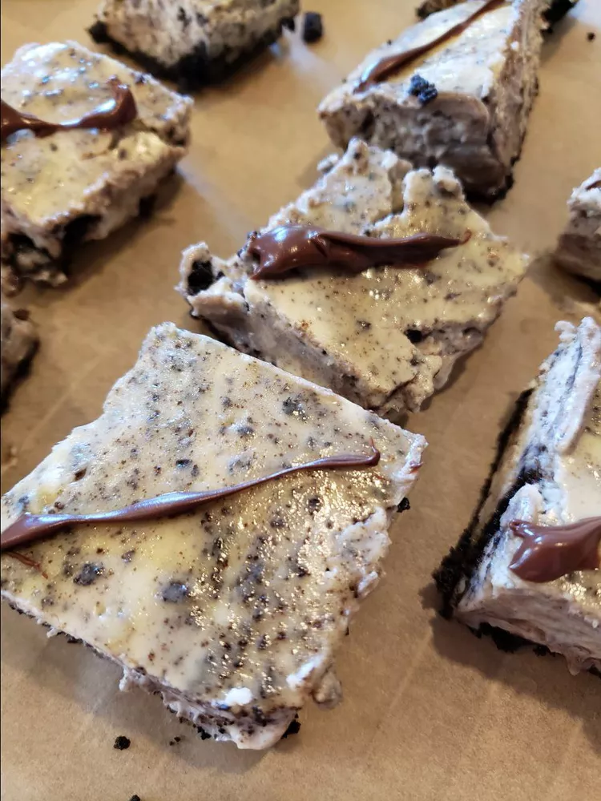

Oreo Cheesecake Bites
Home
These Oreo cheesecake bites came out awesome, now making for my daughter's wedding. They are not difficult and came out of the pan easily. Great recipe. Can also be frozen in an airtight container for up to a month. Let them defrost in the fridge and serve chilled.

Ingredients:
- 1 (14 oz) package chocolate sandwich cookies (such as Oreo)
- 1/4 cup butter, melted
- 4 (8 oz) packages cream cheese, softened
- 1 cup white sugar
- 1 cup sour cream
- 1 tsp vanilla extract
- 4 large eggs
- 4 oz semisweet chocolate
- 4 oz dark chocolate
Directions:
- Preheat the oven to 325 degrees F (165 degrees C). Line a 9x13-inch baking pan with foil, with ends extending over the sides.
- Finely crush 24 cookies and mix with melted butter. Press onto the bottom of the prepared pan. Chop remaining cookies and set aside.
- Beat cream cheese and sugar in a large bowl until blended. Add sour cream and vanilla; mix well. Add eggs, one at a time, beating after each until just blended. Gently stir chopped cookies into batter. Pour over crust.
- Bake in the preheated oven until sides are set and center is almost set, 35 to 40 minutes. Remove from the oven and set pan on a wire rack until completely cool, about 1 hour.
- Cover with plastic wrap and refrigerate for at least 2 hours. Remove from the refrigerator and use the foil overhand to remove cheesecake from the pan. Cut into 36 squares and transfer to a waxed or parchment paper-lined baking tray.
- Place semisweet chocolate in a microwave-safe bowl. Microwave on 50% power in 30-second intervals, stirring frequently, until melted. Repeat with dark chocolate. Pour melted chocolates into separate zip-top bags. Snip a corner off each bag and drizzle over the cheesecake bites. Chill until ready to serve.